A living record of the Bentiaba field season, built from the expedition WhatsApp group. Field discoveries, the practical work of reaching and sustaining a remote site, and a parallel community art project—recorded as the season unfolds.
3–16 October 2026Bentiaba · AngolaWorking document
Media note: the diary expects image and video files in a sibling folder named attachments. Place the referenced media there using the exact filenames. Scientific identifications are provisional unless explicitly confirmed by the research team.
Timeline
03–05 OCT
Arrival & preparation
The international team gathers in Luanda. Museum visits, introductions and final preparations bring researchers and collaborators together before the journey to the fossil-rich coast.
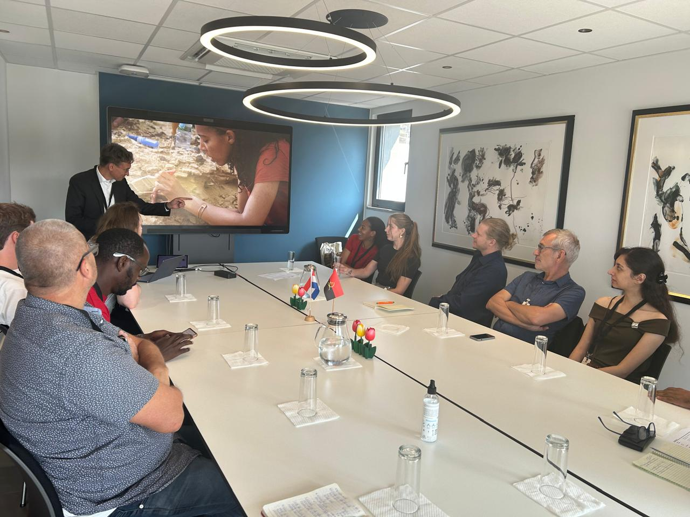
Media file not found00003008-PHOTO-2026-10-05-18-04-01.jpgPlace the WhatsApp-exported media in a folder named attachments beside this HTML file.
00003008-PHOTO-2026-10-05-18-04-01.jpg
POSTING ANGLE / DRAFT
An expedition begins before the first fossil is uncovered: with people, preparation, shared knowledge and the work of bringing a team together.
06 OCT
The field season begins
The planned departure for Bentiaba is postponed after unexpected travel complications. The team adapts its schedule in Luanda, using the extra time for talks and visits to schools and universities while working to reorganise the journey south.
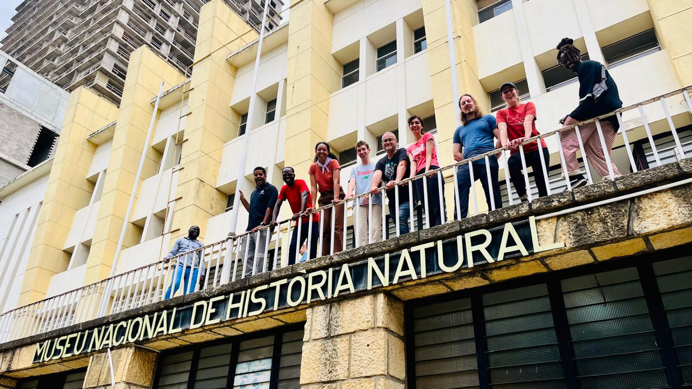
Media file not found00003080-PHOTO-2026-10-06-11-15-00.jpgPlace the WhatsApp-exported media in a folder named attachments beside this HTML file.
00003080-PHOTO-2026-10-06-11-15-00.jpg
Media file not found00003081-VIDEO-2026-10-06-11-17-55.mp4Place the WhatsApp-exported media in a folder named attachments beside this HTML file.
00003081-VIDEO-2026-10-06-11-17-55.mp4
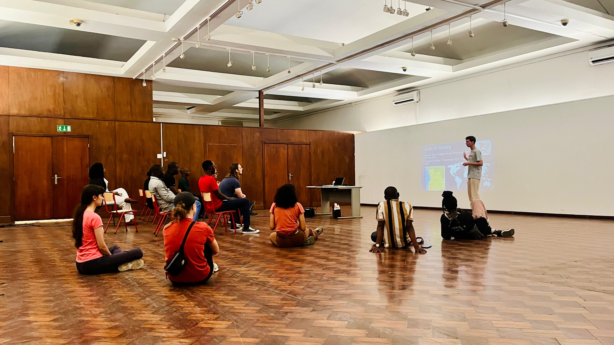
Media file not found00003083-PHOTO-2026-10-06-12-11-33.jpgPlace the WhatsApp-exported media in a folder named attachments beside this HTML file.
00003083-PHOTO-2026-10-06-12-11-33.jpg
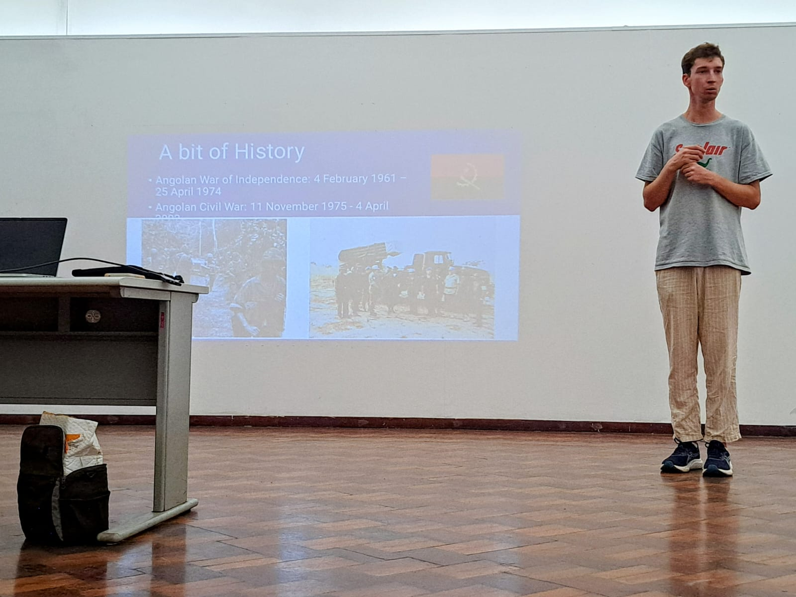
Media file not found00003085-PHOTO-2026-10-06-12-31-06.jpgPlace the WhatsApp-exported media in a folder named attachments beside this HTML file.
00003085-PHOTO-2026-10-06-12-31-06.jpg
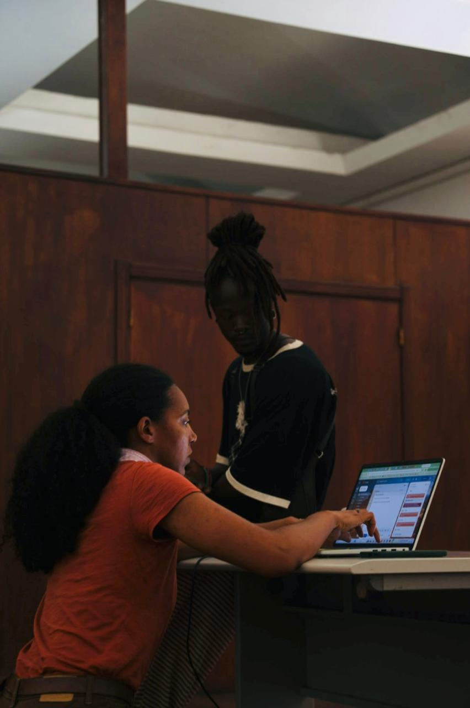
Media file not found00003088-PHOTO-2026-10-06-13-29-14.jpgPlace the WhatsApp-exported media in a folder named attachments beside this HTML file.
00003088-PHOTO-2026-10-06-13-29-14.jpg
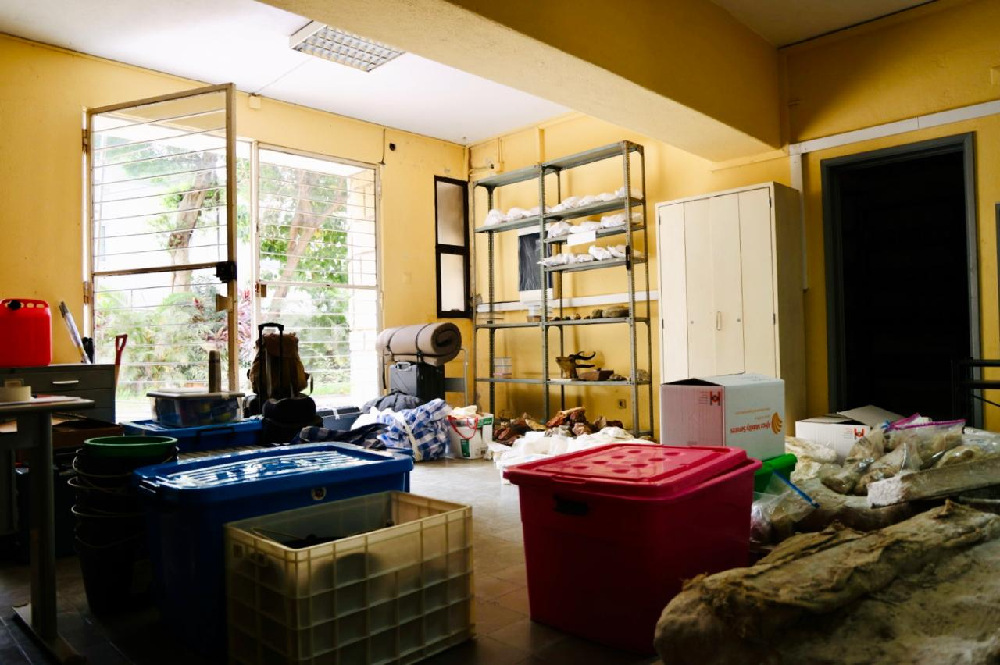
Media file not found00003095-PHOTO-2026-10-06-13-52-33.jpgPlace the WhatsApp-exported media in a folder named attachments beside this HTML file.
00003095-PHOTO-2026-10-06-13-52-33.jpg
POSTING ANGLE / DRAFT
Fieldwork rarely follows a perfect plan. When travel arrangements change, a team has to adapt, keep sharing knowledge and make good use of the time available.
07–09 OCT
The journey south
With the original travel plan disrupted, the expedition splits into two groups on 9 October. One group flies from Luanda to Lubango and continues by road towards Bentiaba, reaching camp that night. The other drives south from Luanda, breaks the journey with an overnight stop in Lobito, and arrives at camp at about 14:00 on 10 October. The road includes some rough and damaged stretches.
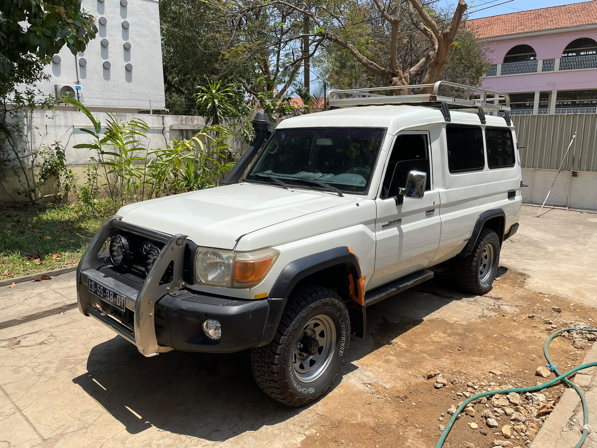
Media file not found00003261-PHOTO-2026-10-09-11-20-47.jpgPlace the WhatsApp-exported media in a folder named attachments beside this HTML file.
00003261-PHOTO-2026-10-09-11-20-47.jpg
Media file not found00003262-PHOTO-2026-10-09-11-27-16.jpgPlace the WhatsApp-exported media in a folder named attachments beside this HTML file.
00003262-PHOTO-2026-10-09-11-27-16.jpg
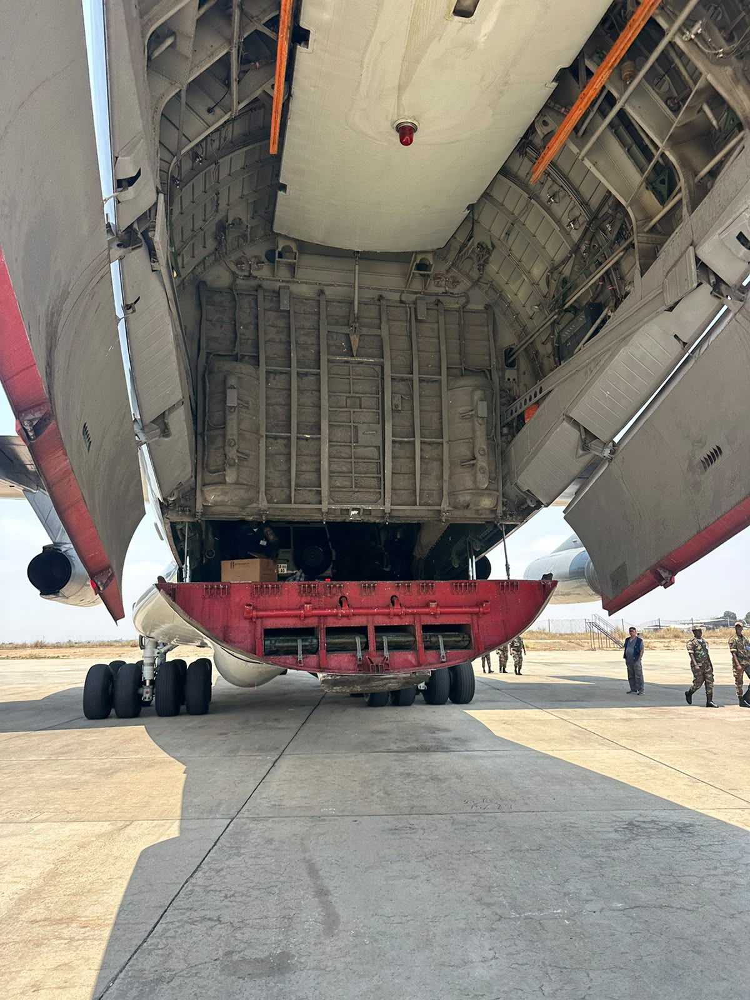
Media file not found00003263-PHOTO-2026-10-09-11-27-38.jpgPlace the WhatsApp-exported media in a folder named attachments beside this HTML file.
00003263-PHOTO-2026-10-09-11-27-38.jpg
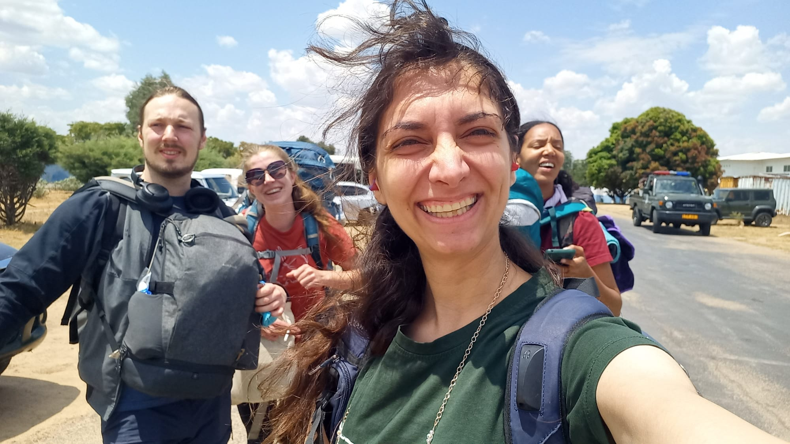
Media file not found00003274-PHOTO-2026-10-09-12-59-55.jpgPlace the WhatsApp-exported media in a folder named attachments beside this HTML file.
00003274-PHOTO-2026-10-09-12-59-55.jpg
Media file not found00003311-VIDEO-2026-10-09-14-14-53.mp4Place the WhatsApp-exported media in a folder named attachments beside this HTML file.
00003311-VIDEO-2026-10-09-14-14-53.mp4
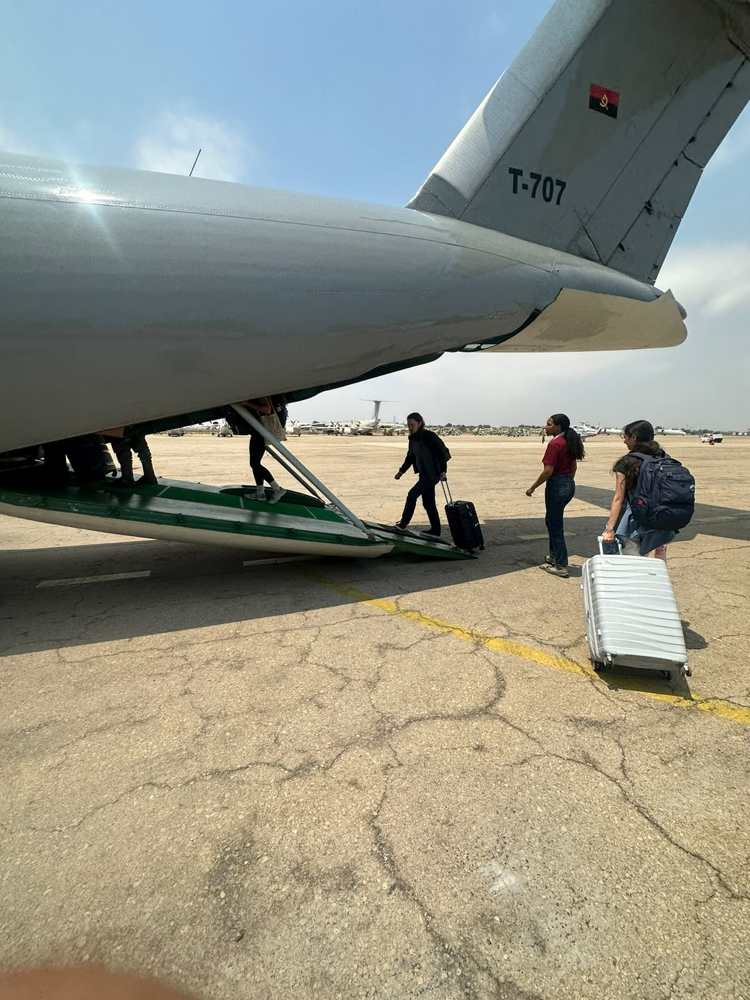
Media file not found00003313-PHOTO-2026-10-09-14-47-26.jpgPlace the WhatsApp-exported media in a folder named attachments beside this HTML file.
00003313-PHOTO-2026-10-09-14-47-26.jpg
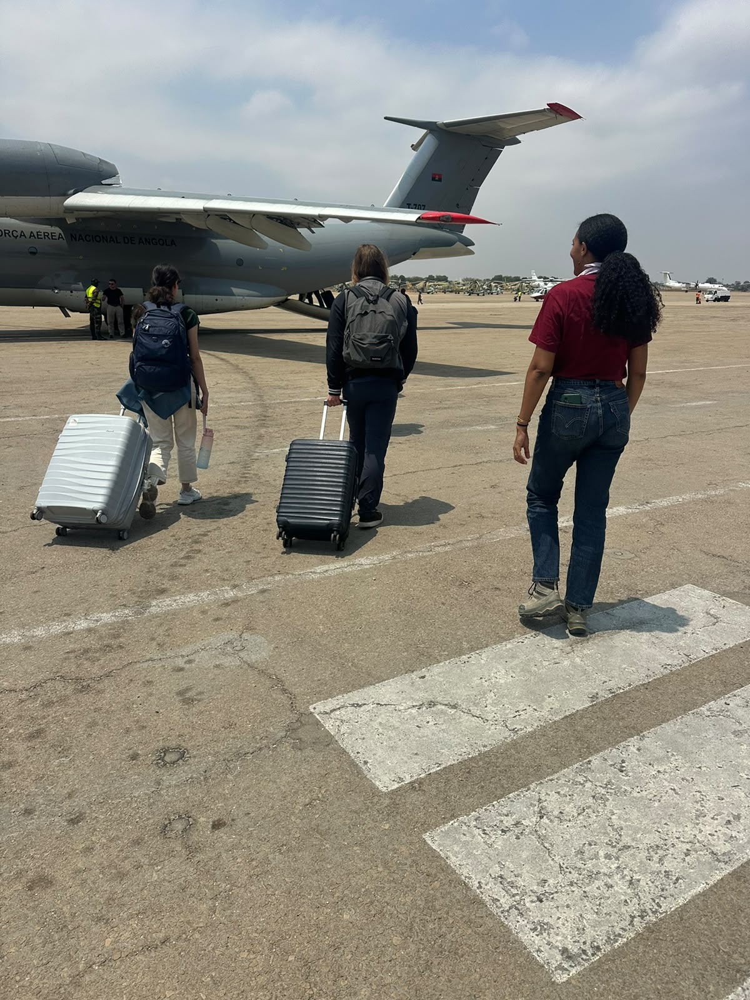
Media file not found00003314-PHOTO-2026-10-09-14-47-36.jpgPlace the WhatsApp-exported media in a folder named attachments beside this HTML file.
00003314-PHOTO-2026-10-09-14-47-36.jpg
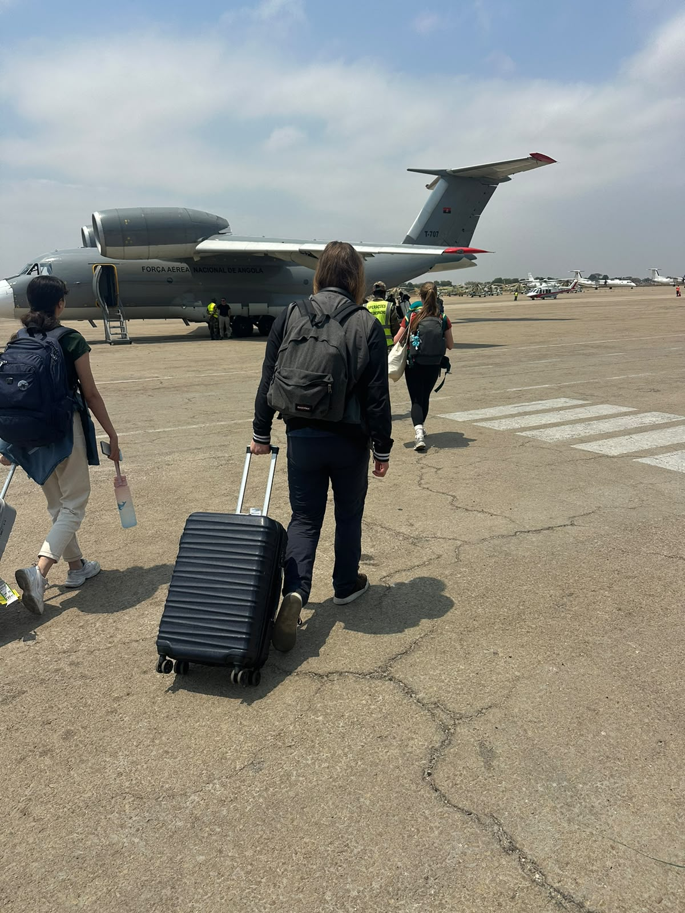
Media file not found00003315-PHOTO-2026-10-09-14-47-51.jpgPlace the WhatsApp-exported media in a folder named attachments beside this HTML file.
00003315-PHOTO-2026-10-09-14-47-51.jpg
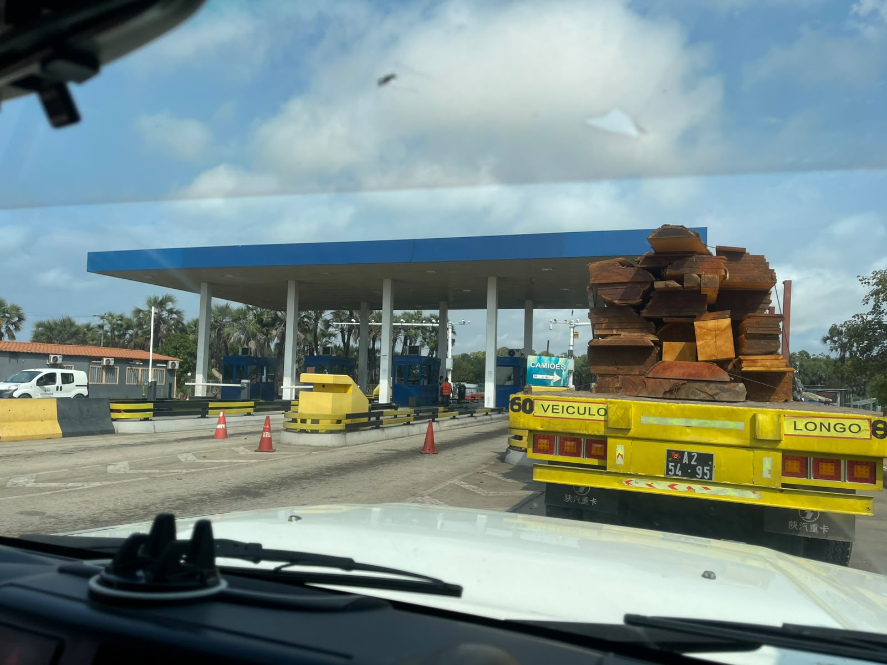
Media file not found00003318-PHOTO-2026-10-09-14-55-11.jpgPlace the WhatsApp-exported media in a folder named attachments beside this HTML file.
00003318-PHOTO-2026-10-09-14-55-11.jpg
Media file not found00003372-VIDEO-2026-10-09-18-10-06.mp4Place the WhatsApp-exported media in a folder named attachments beside this HTML file.
00003372-VIDEO-2026-10-09-18-10-06.mp4
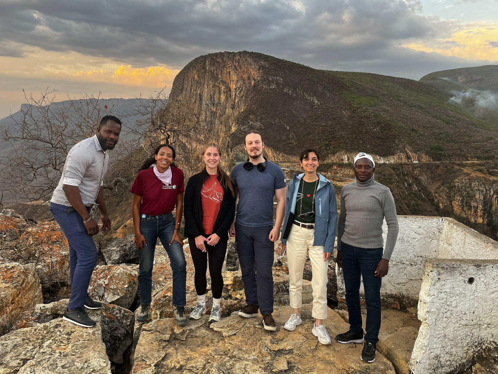
Media file not found00003373-PHOTO-2026-10-09-18-10-08.jpgPlace the WhatsApp-exported media in a folder named attachments beside this HTML file.
00003373-PHOTO-2026-10-09-18-10-08.jpg
Media file not found00003377-VIDEO-2026-10-09-18-55-11.mp4Place the WhatsApp-exported media in a folder named attachments beside this HTML file.
00003377-VIDEO-2026-10-09-18-55-11.mp4
POSTING ANGLE / DRAFT
Getting to a remote field site is part of the work. The team’s journey by air and road, including an overnight stop and difficult stretches, required patience and coordination before research could begin.
10 OCT
Building the field station
The road team reaches camp at around 14:00, joining the group that arrived from Lubango the previous night. The priority shifts to making the field station functional: collecting water, pitching tents, setting up electricity and organising the equipment after a long and demanding journey.
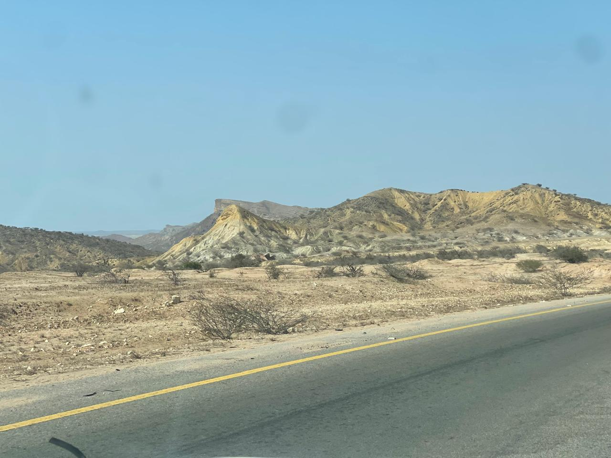
Media file not found00003458-PHOTO-2026-10-10-12-44-00.jpgPlace the WhatsApp-exported media in a folder named attachments beside this HTML file.
00003458-PHOTO-2026-10-10-12-44-00.jpg
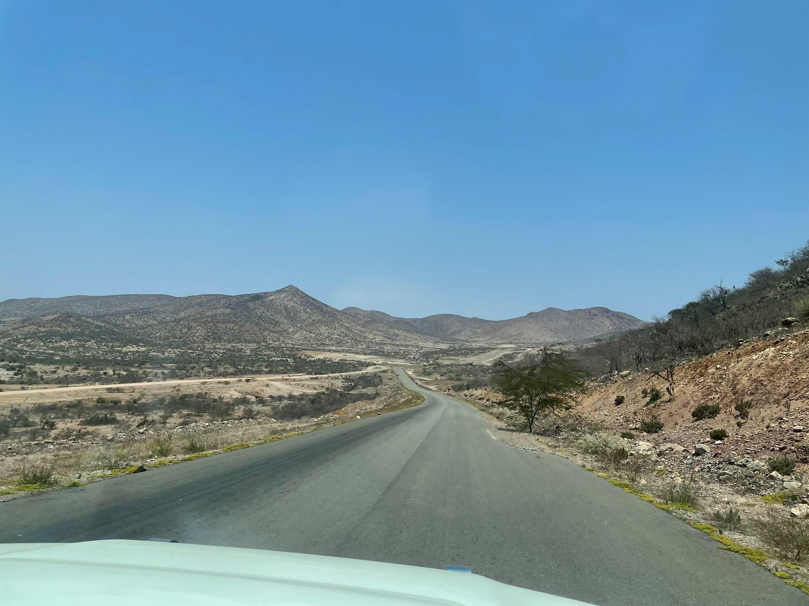
Media file not found00003460-PHOTO-2026-10-10-12-44-08.jpgPlace the WhatsApp-exported media in a folder named attachments beside this HTML file.
00003460-PHOTO-2026-10-10-12-44-08.jpg
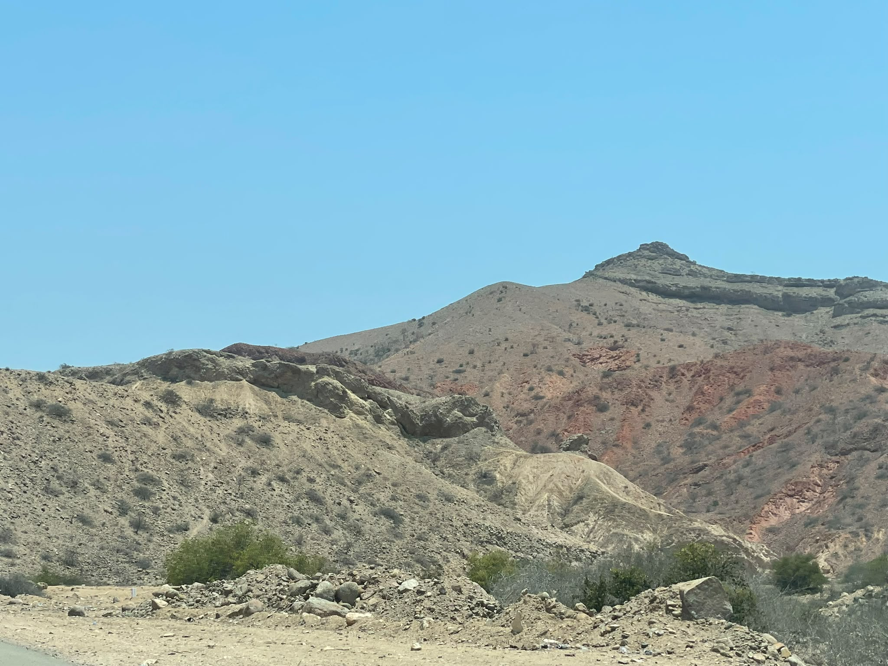
Media file not found00003461-PHOTO-2026-10-10-12-44-09.jpgPlace the WhatsApp-exported media in a folder named attachments beside this HTML file.
00003461-PHOTO-2026-10-10-12-44-09.jpg
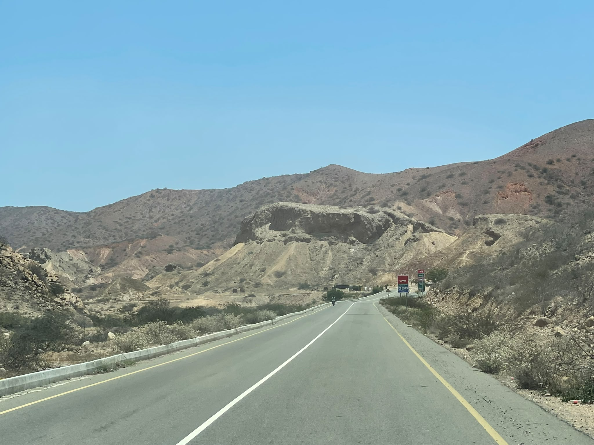
Media file not found00003462-PHOTO-2026-10-10-12-44-09.jpgPlace the WhatsApp-exported media in a folder named attachments beside this HTML file.
00003462-PHOTO-2026-10-10-12-44-09.jpg
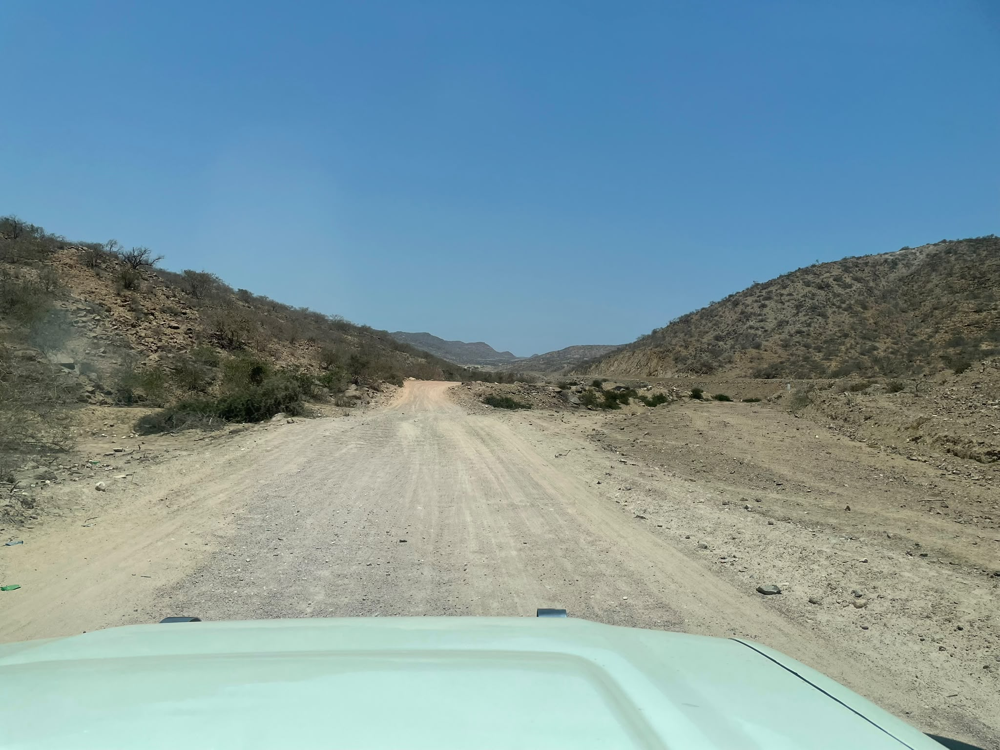
Media file not found00003463-PHOTO-2026-10-10-12-44-10.jpgPlace the WhatsApp-exported media in a folder named attachments beside this HTML file.
00003463-PHOTO-2026-10-10-12-44-10.jpg
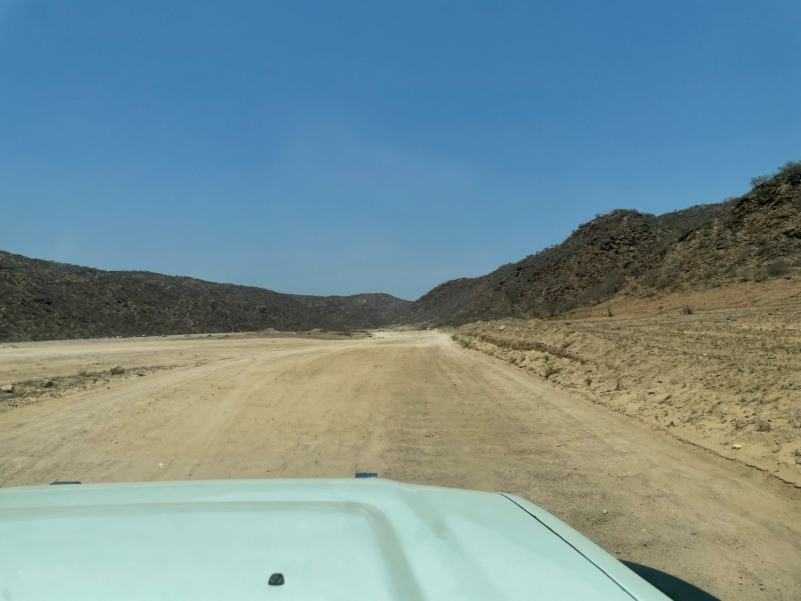
Media file not found00003464-PHOTO-2026-10-10-12-44-10.jpgPlace the WhatsApp-exported media in a folder named attachments beside this HTML file.
00003464-PHOTO-2026-10-10-12-44-10.jpg
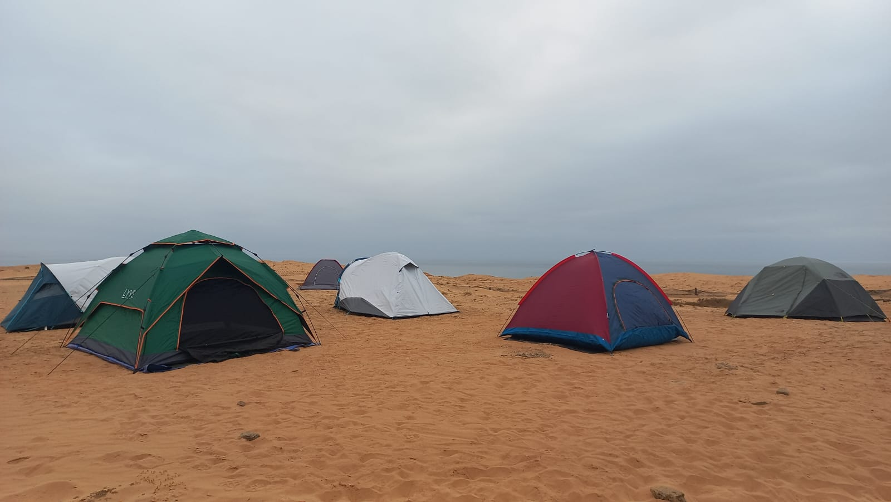
Media file not found00003483-PHOTO-2026-10-10-17-39-43.jpgPlace the WhatsApp-exported media in a folder named attachments beside this HTML file.
00003483-PHOTO-2026-10-10-17-39-43.jpg
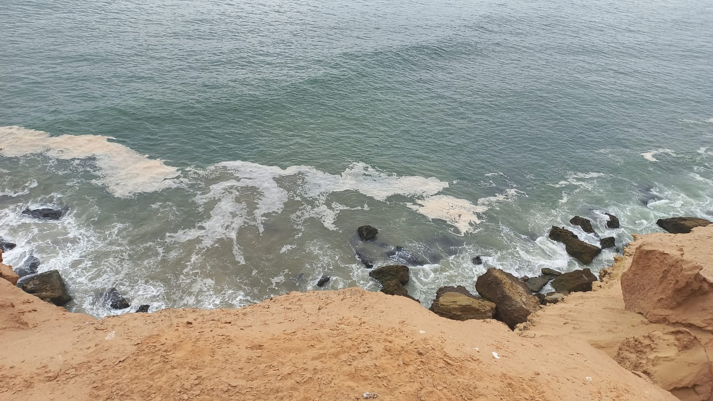
Media file not found00003484-PHOTO-2026-10-10-17-39-44.jpgPlace the WhatsApp-exported media in a folder named attachments beside this HTML file.
00003484-PHOTO-2026-10-10-17-39-44.jpg
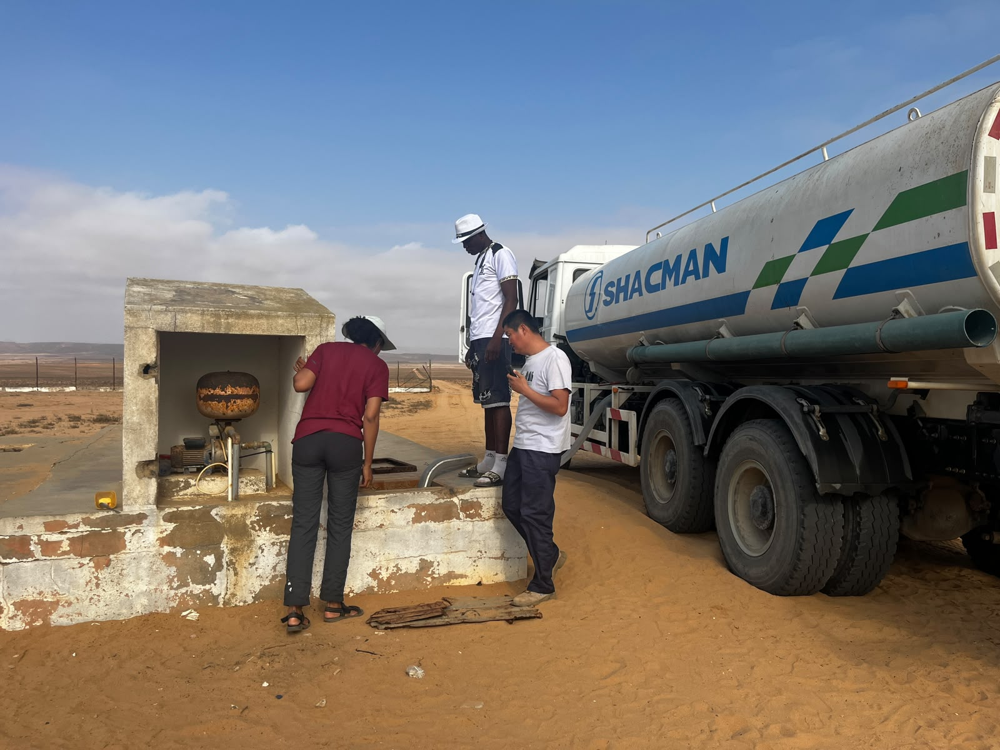
Media file not found00003486-PHOTO-2026-10-10-18-04-53.jpgPlace the WhatsApp-exported media in a folder named attachments beside this HTML file.
00003486-PHOTO-2026-10-10-18-04-53.jpg
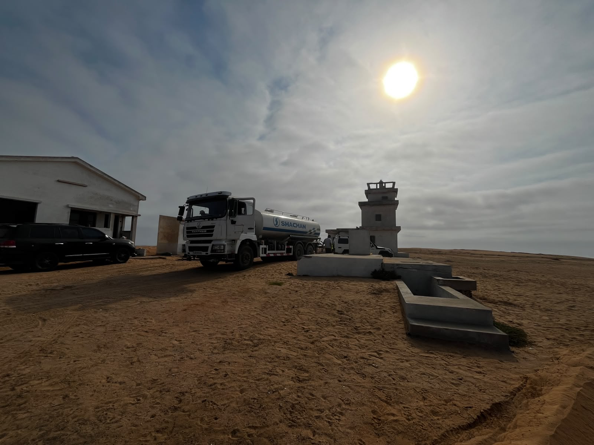
Media file not found00003487-PHOTO-2026-10-10-18-04-53.jpgPlace the WhatsApp-exported media in a folder named attachments beside this HTML file.
00003487-PHOTO-2026-10-10-18-04-53.jpg
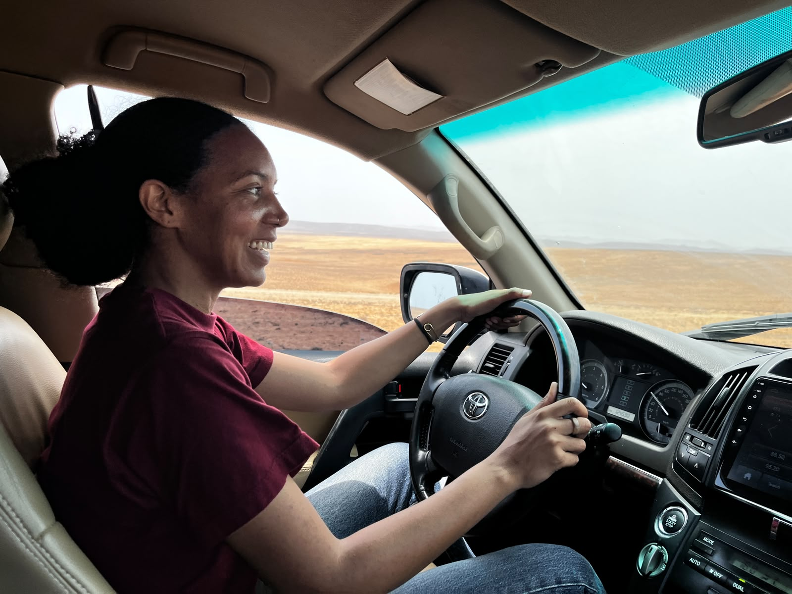
Media file not found00003488-PHOTO-2026-10-10-18-04-54.jpgPlace the WhatsApp-exported media in a folder named attachments beside this HTML file.
00003488-PHOTO-2026-10-10-18-04-54.jpg
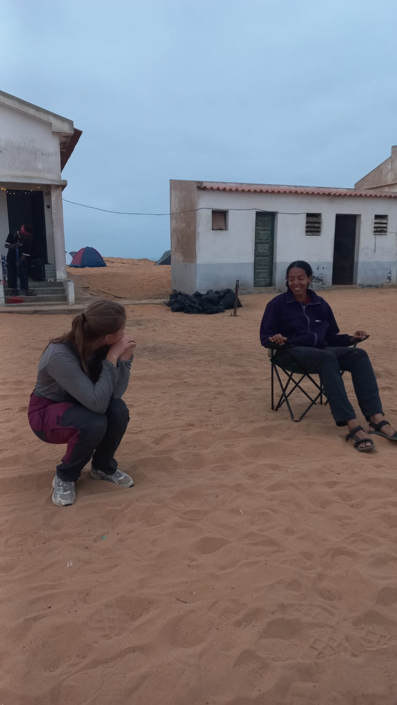
Media file not found00003489-PHOTO-2026-10-10-18-12-03.jpgPlace the WhatsApp-exported media in a folder named attachments beside this HTML file.
00003489-PHOTO-2026-10-10-18-12-03.jpg
POSTING ANGLE / DRAFT
Water, shelter and power are not background details: they are the infrastructure that makes sustained field research possible.
11 OCT
Reading the evidence
Fieldwork gets underway. The team examines a mosasaur caudal vertebra and its haemal arch, while careful photographic documentation remains essential: a scale in millimetres or centimetres helps make specimen images useful for later comparison.
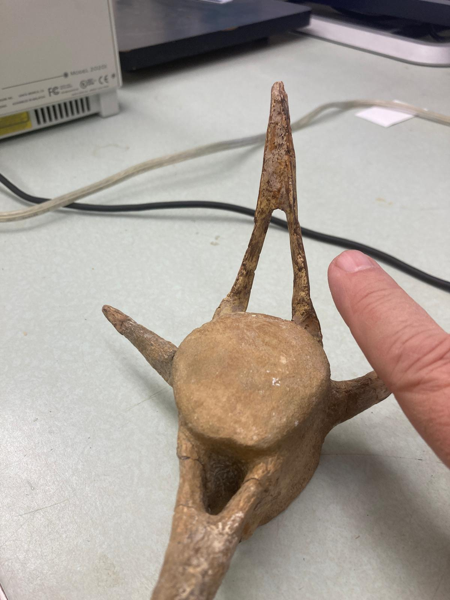
Media file not found00003627-PHOTO-2026-10-11-20-36-21.jpgPlace the WhatsApp-exported media in a folder named attachments beside this HTML file.
00003627-PHOTO-2026-10-11-20-36-21.jpg
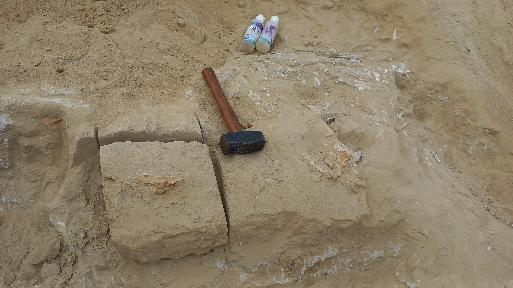
Media file not found00003629-PHOTO-2026-10-11-20-39-12.jpgPlace the WhatsApp-exported media in a folder named attachments beside this HTML file.
00003629-PHOTO-2026-10-11-20-39-12.jpg
POSTING ANGLE / DRAFT
Good field documentation preserves more than an image. A scale, a clear view and a record of context can make a specimen photograph useful long after the team leaves the site.
12 OCT
A pterosaur bone
A pterosaur bone is reported from the previous day’s fieldwork, adding another point of interest to the fossil record being explored at Bentiaba. Fieldwork, camp routines and transport coordination continue alongside the scientific work.
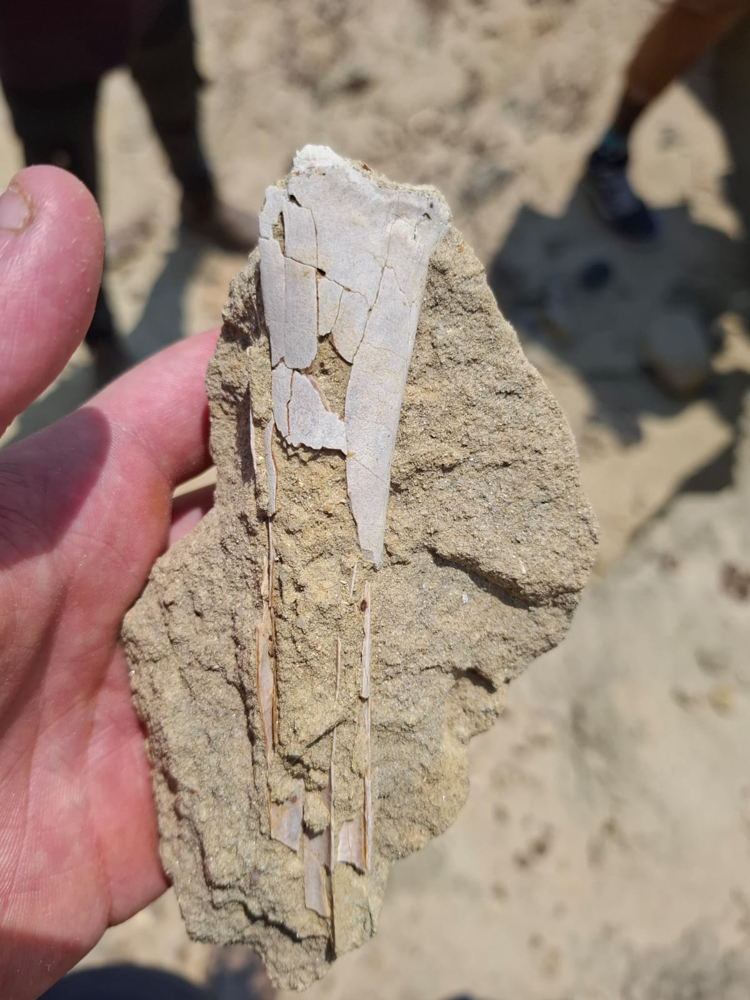
Media file not found00003633-PHOTO-2026-10-12-10-06-16.jpgPlace the WhatsApp-exported media in a folder named attachments beside this HTML file.
00003633-PHOTO-2026-10-12-10-06-16.jpg
POSTING ANGLE / DRAFT
A single fossil can expand the questions being asked at a site. Each find adds a new clue to a landscape that researchers are still working to understand.
13 OCT
A new jaw near the beach
A new jaw is reported from the same stratigraphic level as material provisionally referred to as “lindesaurus”, this time closer to the beach. Other fragments prompt discussion of possible identifications, but the available evidence is not yet sufficient for a firm conclusion. The day also brings a separate strand of the expedition into view: artists working after dark on a paleoart mural for the local school.
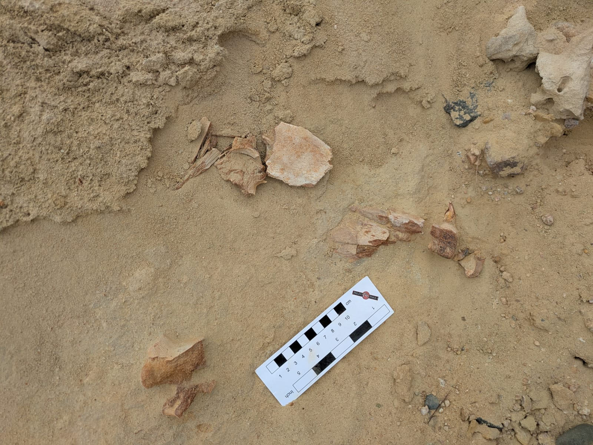
Media file not found00003812-PHOTO-2026-10-13-18-56-13.jpgPlace the WhatsApp-exported media in a folder named attachments beside this HTML file.
00003812-PHOTO-2026-10-13-18-56-13.jpg
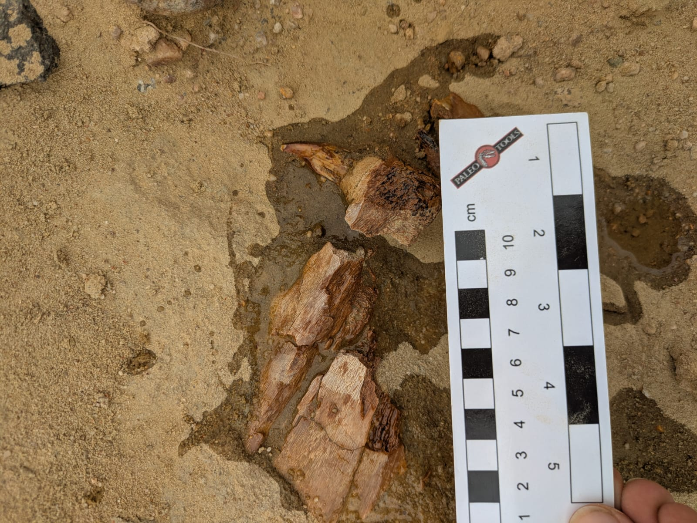
Media file not found00003814-PHOTO-2026-10-13-18-57-22.jpgPlace the WhatsApp-exported media in a folder named attachments beside this HTML file.
00003814-PHOTO-2026-10-13-18-57-22.jpg
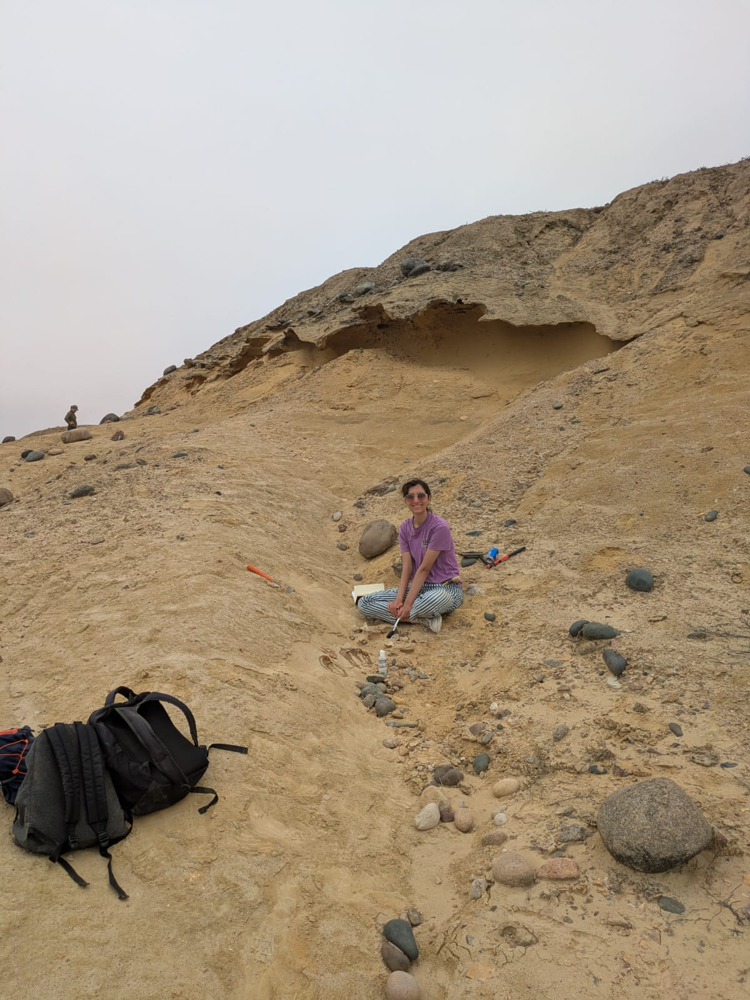
Media file not found00003815-PHOTO-2026-10-13-18-57-26.jpgPlace the WhatsApp-exported media in a folder named attachments beside this HTML file.
00003815-PHOTO-2026-10-13-18-57-26.jpg
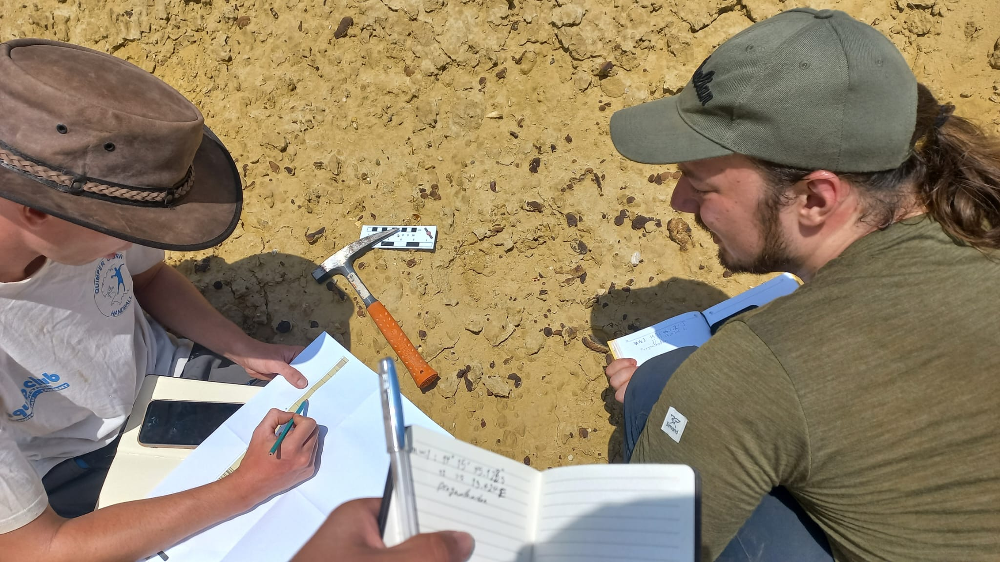
Media file not found00003851-PHOTO-2026-10-13-20-09-05.jpgPlace the WhatsApp-exported media in a folder named attachments beside this HTML file.
00003851-PHOTO-2026-10-13-20-09-05.jpg
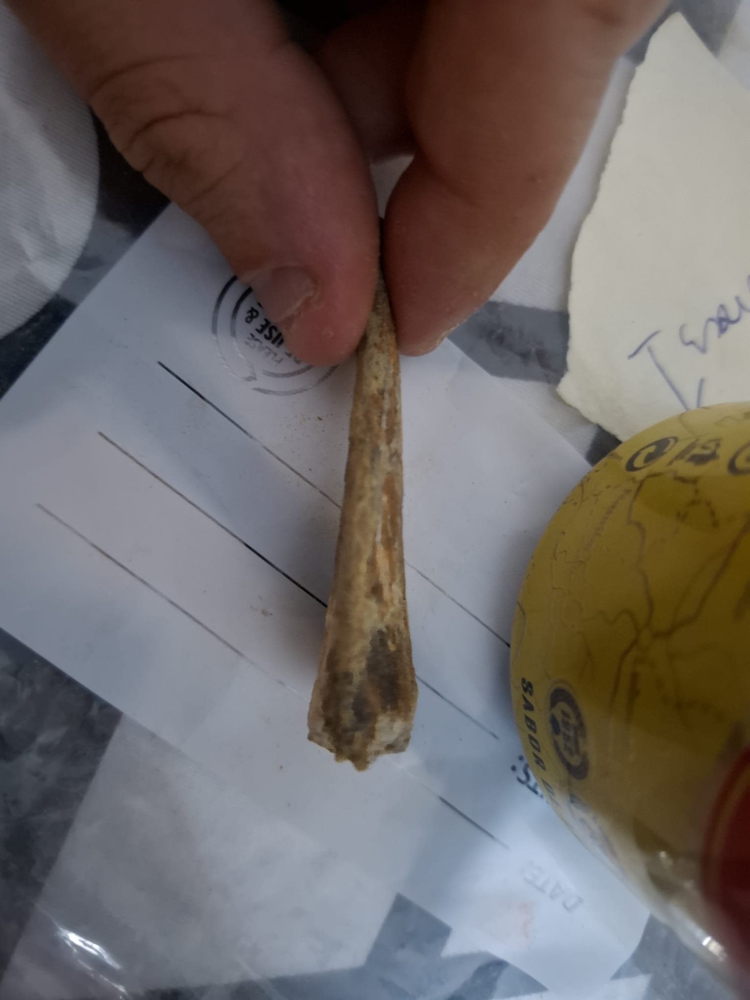
Media file not found00003856-PHOTO-2026-10-13-21-09-40.jpgPlace the WhatsApp-exported media in a folder named attachments beside this HTML file.
00003856-PHOTO-2026-10-13-21-09-40.jpg
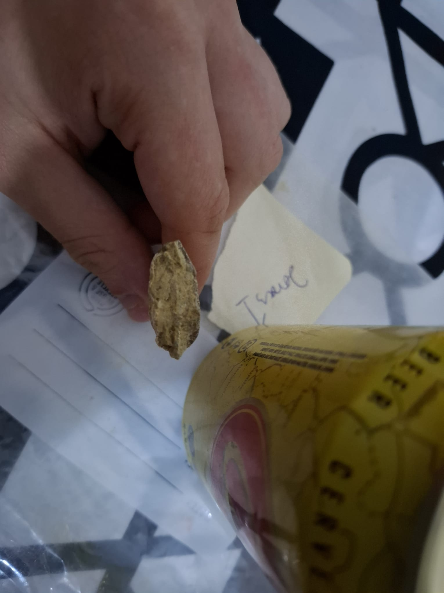
Media file not found00003859-PHOTO-2026-10-13-21-09-41.jpgPlace the WhatsApp-exported media in a folder named attachments beside this HTML file.
00003859-PHOTO-2026-10-13-21-09-41.jpg
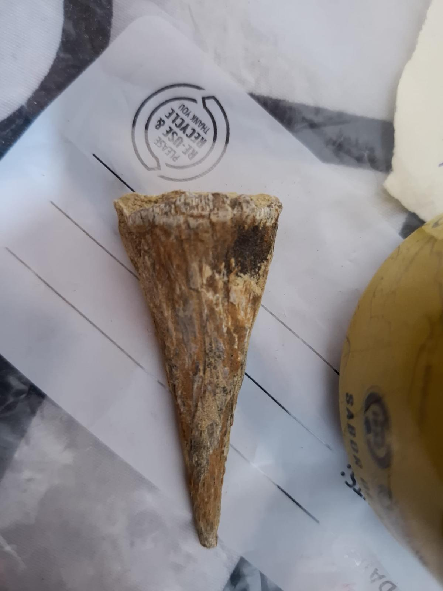
Media file not found00003866-PHOTO-2026-10-13-22-12-16.jpgPlace the WhatsApp-exported media in a folder named attachments beside this HTML file.
00003866-PHOTO-2026-10-13-22-12-16.jpg
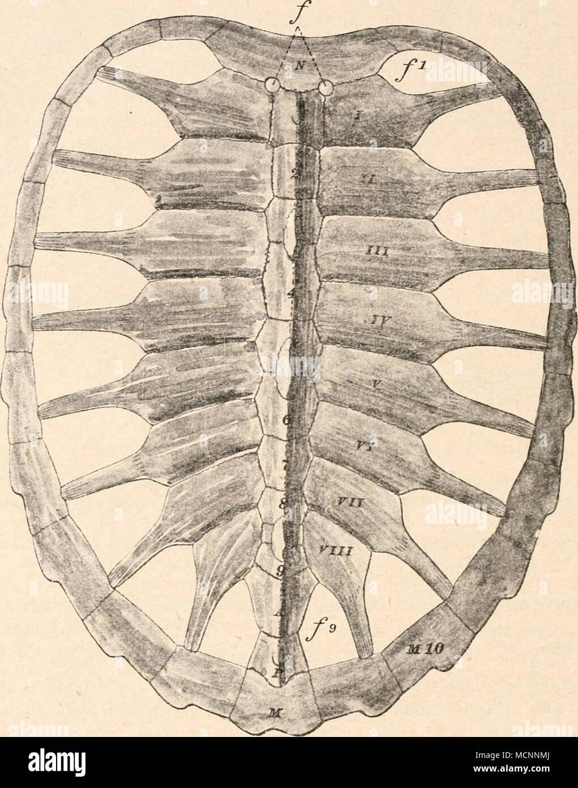
Media file not found00003867-PHOTO-2026-10-13-22-12-16.jpgPlace the WhatsApp-exported media in a folder named attachments beside this HTML file.
00003867-PHOTO-2026-10-13-22-12-16.jpg
POSTING ANGLE / DRAFT
A possible identification is the beginning of a process, not the end of one. Researchers compare anatomy, context and other specimens before deciding what a fragment can reliably tell us.
14 OCT
Fieldwork and a changing landscape
The team continues surveying and documenting the site. A possible shark-tooth mark and a tentative “Globidens?” identification are raised as questions for further examination, not as confirmed findings. Meanwhile, the colourful mural taking shape at the Bentiaba school is becoming a visible part of the expedition’s community-facing work.
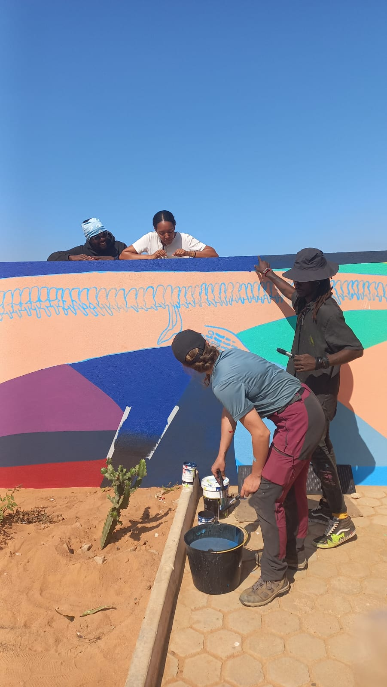
Media file not found00003880-PHOTO-2026-10-14-09-13-22.jpgPlace the WhatsApp-exported media in a folder named attachments beside this HTML file.
00003880-PHOTO-2026-10-14-09-13-22.jpg
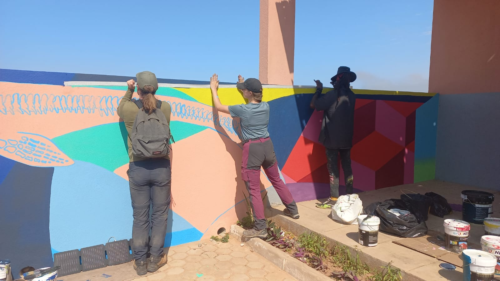
Media file not found00003881-PHOTO-2026-10-14-09-13-22.jpgPlace the WhatsApp-exported media in a folder named attachments beside this HTML file.
00003881-PHOTO-2026-10-14-09-13-22.jpg
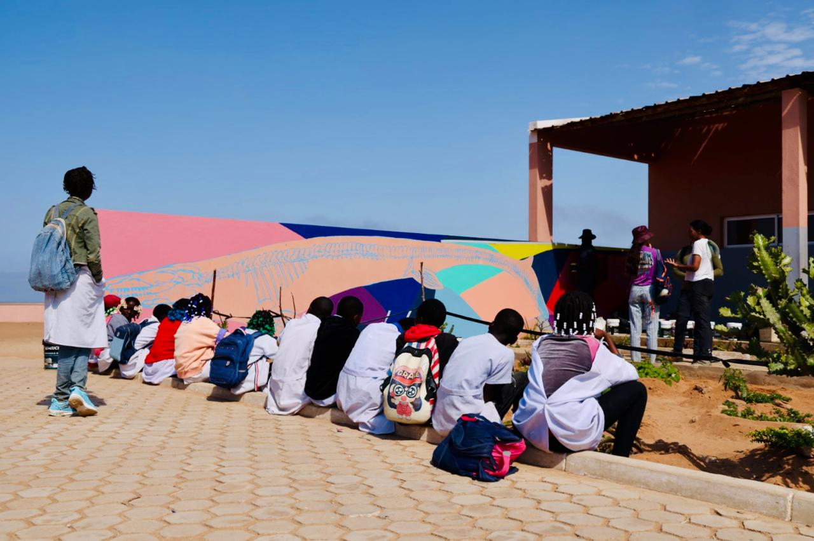
Media file not found00003882-PHOTO-2026-10-14-09-35-29.jpgPlace the WhatsApp-exported media in a folder named attachments beside this HTML file.
00003882-PHOTO-2026-10-14-09-35-29.jpg
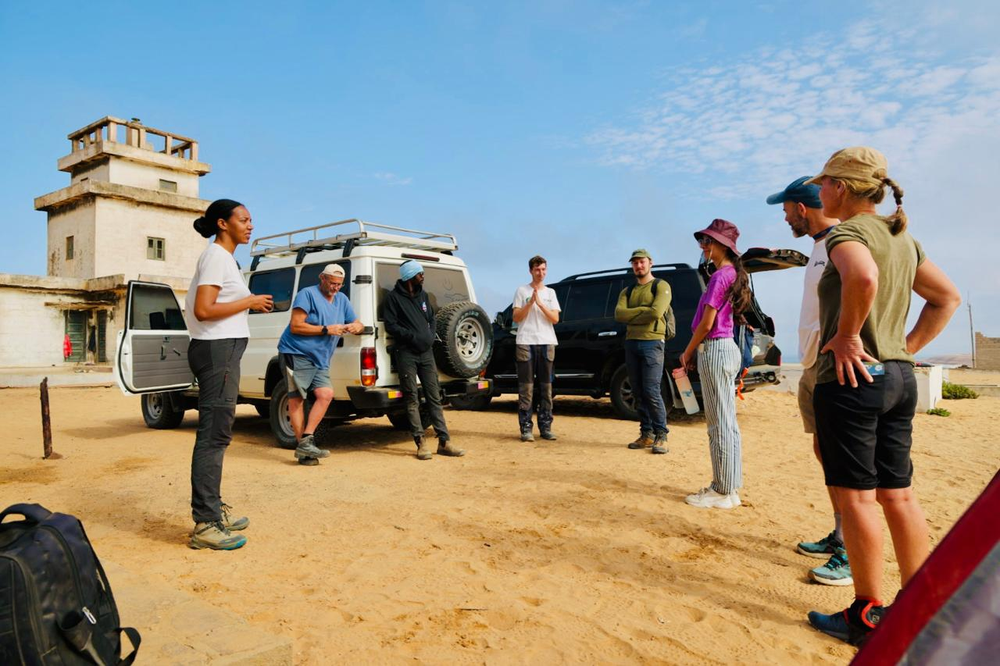
Media file not found00003883-PHOTO-2026-10-14-09-35-29.jpgPlace the WhatsApp-exported media in a folder named attachments beside this HTML file.
00003883-PHOTO-2026-10-14-09-35-29.jpg
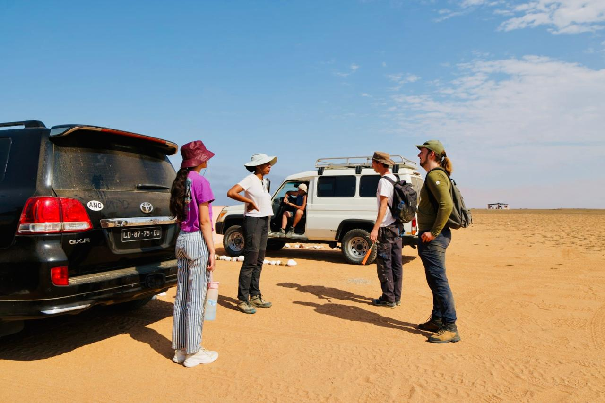
Media file not found00003884-PHOTO-2026-10-14-09-35-29.jpgPlace the WhatsApp-exported media in a folder named attachments beside this HTML file.
00003884-PHOTO-2026-10-14-09-35-29.jpg
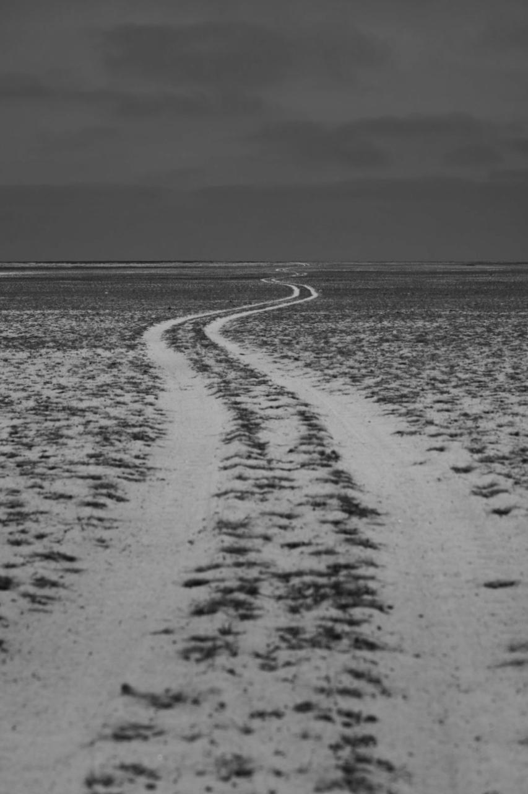
Media file not found00003898-PHOTO-2026-10-14-15-14-35.jpgPlace the WhatsApp-exported media in a folder named attachments beside this HTML file.
00003898-PHOTO-2026-10-14-15-14-35.jpg
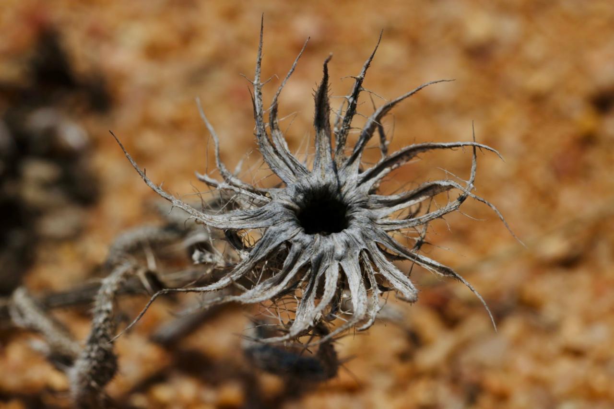
Media file not found00003899-PHOTO-2026-10-14-15-14-35.jpgPlace the WhatsApp-exported media in a folder named attachments beside this HTML file.
00003899-PHOTO-2026-10-14-15-14-35.jpg
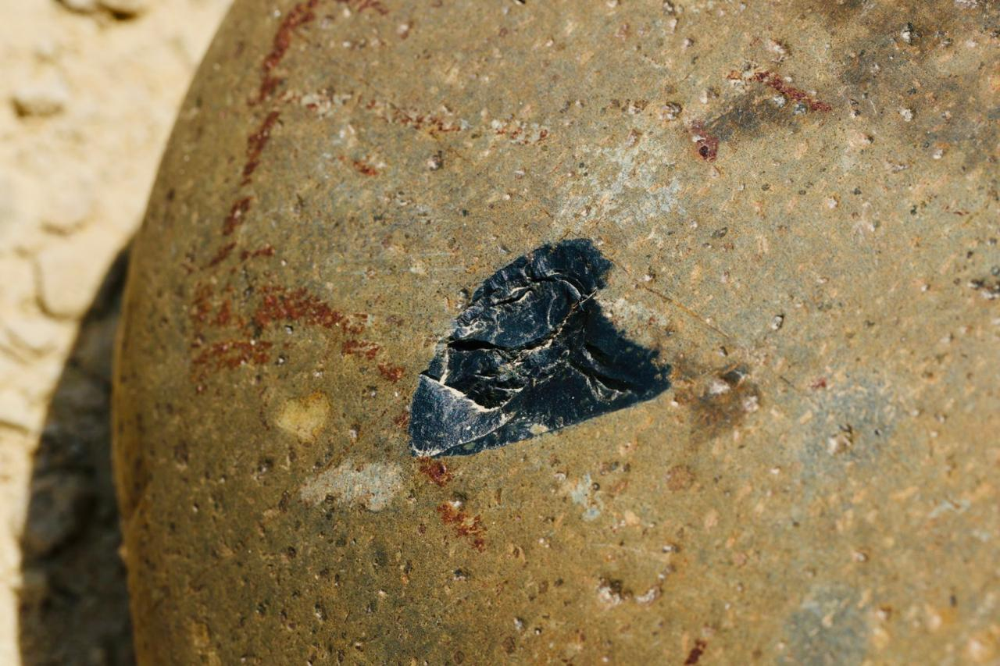
Media file not found00003900-PHOTO-2026-10-14-15-14-36.jpgPlace the WhatsApp-exported media in a folder named attachments beside this HTML file.
00003900-PHOTO-2026-10-14-15-14-36.jpg
Media file not found00003912-VIDEO-2026-10-14-15-16-27.mp4Place the WhatsApp-exported media in a folder named attachments beside this HTML file.
00003912-VIDEO-2026-10-14-15-16-27.mp4
Media file not found00003913-VIDEO-2026-10-14-15-16-30.mp4Place the WhatsApp-exported media in a folder named attachments beside this HTML file.
00003913-VIDEO-2026-10-14-15-16-30.mp4
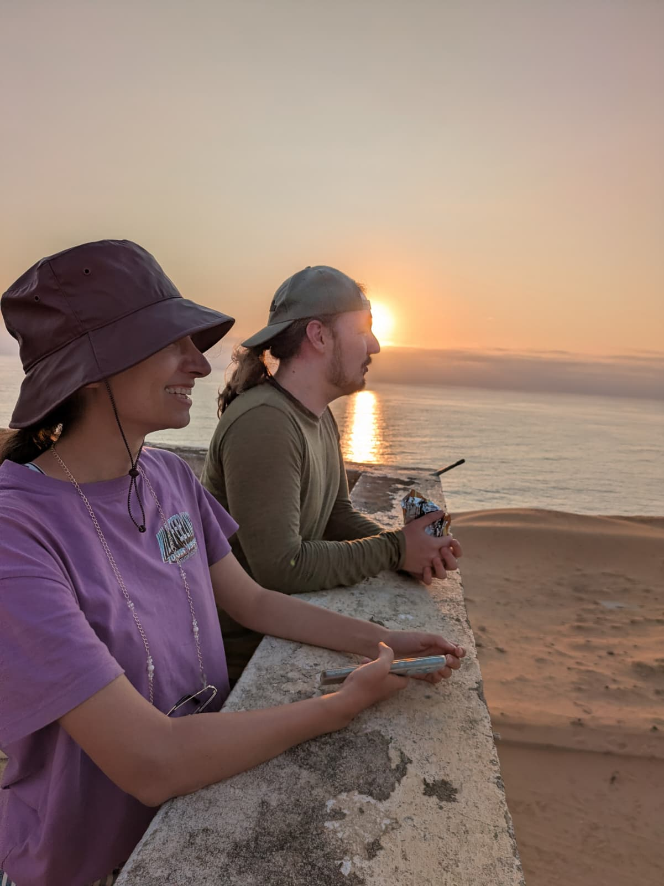
Media file not found00003928-PHOTO-2026-10-14-18-08-34.jpgPlace the WhatsApp-exported media in a folder named attachments beside this HTML file.
00003928-PHOTO-2026-10-14-18-08-34.jpg
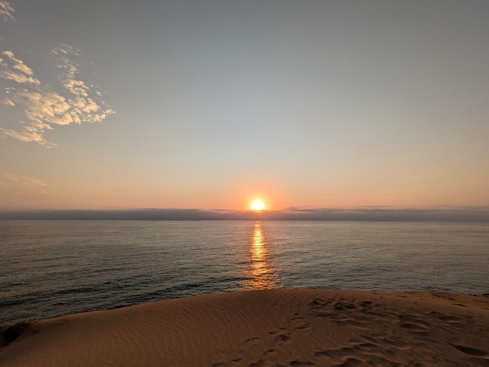
Media file not found00003930-PHOTO-2026-10-14-18-08-57.jpgPlace the WhatsApp-exported media in a folder named attachments beside this HTML file.
00003930-PHOTO-2026-10-14-18-08-57.jpg
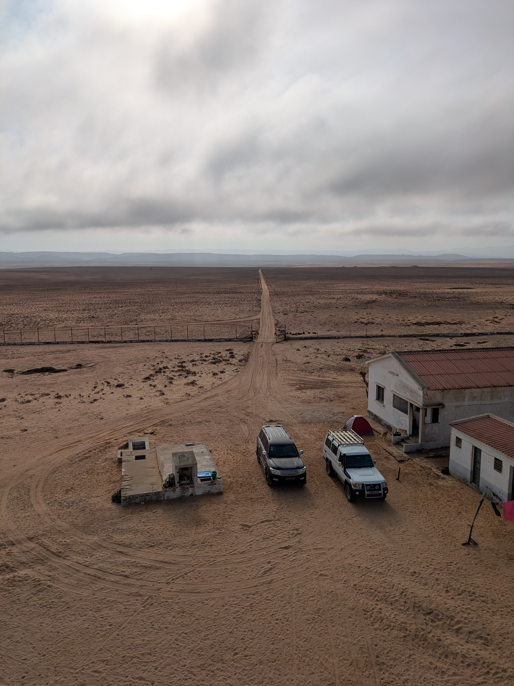
Media file not found00003997-PHOTO-2026-10-14-19-42-04.jpgPlace the WhatsApp-exported media in a folder named attachments beside this HTML file.
00003997-PHOTO-2026-10-14-19-42-04.jpg
Media file not found00003999-VIDEO-2026-10-14-20-30-40.mp4Place the WhatsApp-exported media in a folder named attachments beside this HTML file.
00003999-VIDEO-2026-10-14-20-30-40.mp4
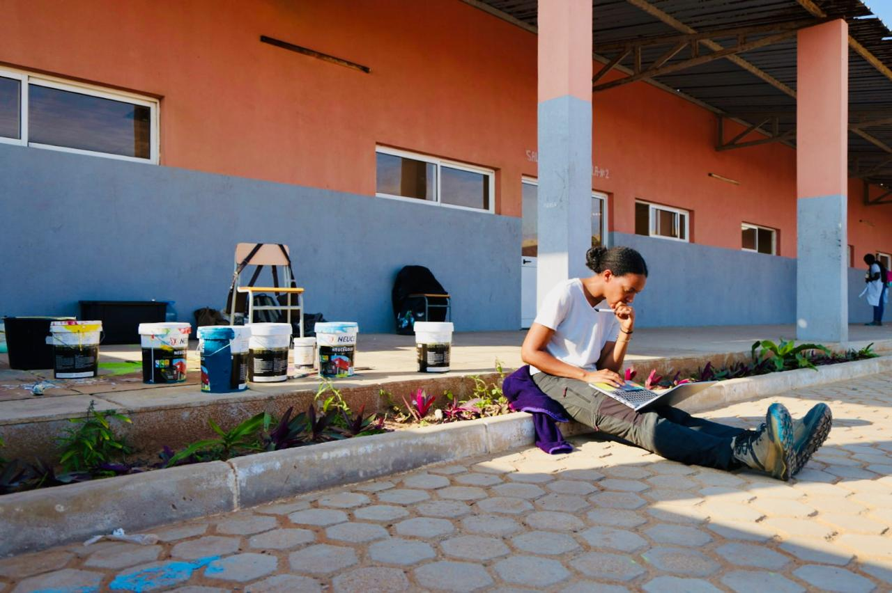
Media file not found00004000-PHOTO-2026-10-14-20-36-19.jpgPlace the WhatsApp-exported media in a folder named attachments beside this HTML file.
00004000-PHOTO-2026-10-14-20-36-19.jpg
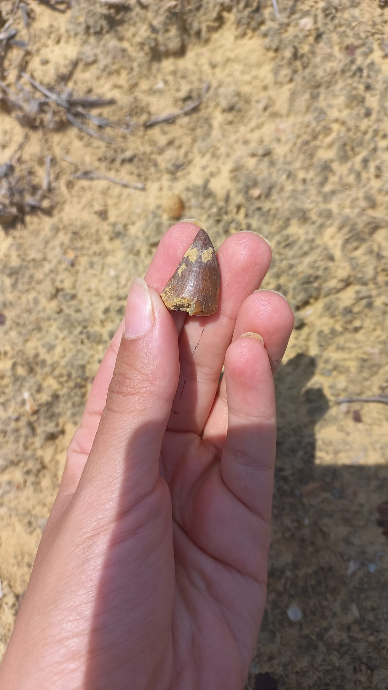
Media file not found00004021-PHOTO-2026-10-14-20-44-27.jpgPlace the WhatsApp-exported media in a folder named attachments beside this HTML file.
00004021-PHOTO-2026-10-14-20-44-27.jpg
POSTING ANGLE / DRAFT
Field science advances through careful observation and discussion. A promising detail becomes useful when it is documented, compared and tested against the evidence.
11–14 OCT
A parallel project: paleoart for Bentiaba school
Alongside the fossil research, a team of artists is creating a large paleoart mural at the school in Bentiaba. The work begins with a visit to the school and decisions about the wall, then develops through drawing, painting and late-night sessions. Two mosasaurs face one another across the composition, with the sea visible between them. This is a distinct community and artistic project running alongside the scientific expedition—not a fossil discovery or research result.
Media file not found00003771-PHOTO-2026-10-13-18-42-46.jpgPlace the media in the attachments folder beside this HTML file.
00003771-PHOTO-2026-10-13-18-42-46.jpg
Media file not found00003772-PHOTO-2026-10-13-18-43-15.jpgPlace the media in the attachments folder beside this HTML file.
00003772-PHOTO-2026-10-13-18-43-15.jpg
Media file not found00003773-PHOTO-2026-10-13-18-43-27.jpgPlace the media in the attachments folder beside this HTML file.
00003773-PHOTO-2026-10-13-18-43-27.jpg
Media file not found00003774-PHOTO-2026-10-13-18-43-28.jpgPlace the media in the attachments folder beside this HTML file.
00003774-PHOTO-2026-10-13-18-43-28.jpg
Media file not found00003775-PHOTO-2026-10-13-18-43-46.jpgPlace the media in the attachments folder beside this HTML file.
00003775-PHOTO-2026-10-13-18-43-46.jpg
Media file not found00003776-PHOTO-2026-10-13-18-43-47.jpgPlace the media in the attachments folder beside this HTML file.
00003776-PHOTO-2026-10-13-18-43-47.jpg
Media file not found00003777-PHOTO-2026-10-13-18-43-50.jpgPlace the media in the attachments folder beside this HTML file.
00003777-PHOTO-2026-10-13-18-43-50.jpg
Media file not found00003778-PHOTO-2026-10-13-18-43-51.jpgPlace the media in the attachments folder beside this HTML file.
00003778-PHOTO-2026-10-13-18-43-51.jpg
Media file not found00003779-PHOTO-2026-10-13-18-44-03.jpgPlace the media in the attachments folder beside this HTML file.
00003779-PHOTO-2026-10-13-18-44-03.jpg
Media file not found00003780-PHOTO-2026-10-13-18-44-03.jpgPlace the media in the attachments folder beside this HTML file.
00003780-PHOTO-2026-10-13-18-44-03.jpg
Media file not found00003781-PHOTO-2026-10-13-18-44-04.jpgPlace the media in the attachments folder beside this HTML file.
00003781-PHOTO-2026-10-13-18-44-04.jpg
Media file not found00003782-PHOTO-2026-10-13-18-44-04.jpgPlace the media in the attachments folder beside this HTML file.
00003782-PHOTO-2026-10-13-18-44-04.jpg
Media file not found00003783-PHOTO-2026-10-13-18-44-05.jpgPlace the media in the attachments folder beside this HTML file.
00003783-PHOTO-2026-10-13-18-44-05.jpg
Media file not found00003784-PHOTO-2026-10-13-18-44-05.jpgPlace the media in the attachments folder beside this HTML file.
00003784-PHOTO-2026-10-13-18-44-05.jpg
Media file not found00003785-PHOTO-2026-10-13-18-44-06.jpgPlace the media in the attachments folder beside this HTML file.
00003785-PHOTO-2026-10-13-18-44-06.jpg
Media file not found00003786-PHOTO-2026-10-13-18-44-07.jpgPlace the media in the attachments folder beside this HTML file.
00003786-PHOTO-2026-10-13-18-44-07.jpg
Media file not found00003787-PHOTO-2026-10-13-18-44-07.jpgPlace the media in the attachments folder beside this HTML file.
00003787-PHOTO-2026-10-13-18-44-07.jpg
Media file not found00003788-PHOTO-2026-10-13-18-44-08.jpgPlace the media in the attachments folder beside this HTML file.
00003788-PHOTO-2026-10-13-18-44-08.jpg
Media file not found00003791-PHOTO-2026-10-13-18-47-32.jpgPlace the media in the attachments folder beside this HTML file.
00003791-PHOTO-2026-10-13-18-47-32.jpg
Media file not found00003792-PHOTO-2026-10-13-18-47-33.jpgPlace the media in the attachments folder beside this HTML file.
00003792-PHOTO-2026-10-13-18-47-33.jpg
Media file not found00003793-PHOTO-2026-10-13-18-47-33.jpgPlace the media in the attachments folder beside this HTML file.
00003793-PHOTO-2026-10-13-18-47-33.jpg
Media file not found00003794-PHOTO-2026-10-13-18-47-34.jpgPlace the media in the attachments folder beside this HTML file.
00003794-PHOTO-2026-10-13-18-47-34.jpg
Media file not found00003795-PHOTO-2026-10-13-18-47-34.jpgPlace the media in the attachments folder beside this HTML file.
00003795-PHOTO-2026-10-13-18-47-34.jpg
Media file not found00003796-PHOTO-2026-10-13-18-47-35.jpgPlace the media in the attachments folder beside this HTML file.
00003796-PHOTO-2026-10-13-18-47-35.jpg
Media file not found00003797-PHOTO-2026-10-13-18-47-35.jpgPlace the media in the attachments folder beside this HTML file.
00003797-PHOTO-2026-10-13-18-47-35.jpg
Media file not found00003798-PHOTO-2026-10-13-18-47-36.jpgPlace the media in the attachments folder beside this HTML file.
00003798-PHOTO-2026-10-13-18-47-36.jpg
Media file not found00003799-PHOTO-2026-10-13-18-47-36.jpgPlace the media in the attachments folder beside this HTML file.
00003799-PHOTO-2026-10-13-18-47-36.jpg
Media file not found00003800-PHOTO-2026-10-13-18-47-36.jpgPlace the media in the attachments folder beside this HTML file.
00003800-PHOTO-2026-10-13-18-47-36.jpg
Media file not found00003801-PHOTO-2026-10-13-18-47-37.jpgPlace the media in the attachments folder beside this HTML file.
00003801-PHOTO-2026-10-13-18-47-37.jpg
Media file not found00003802-PHOTO-2026-10-13-18-47-37.jpgPlace the media in the attachments folder beside this HTML file.
00003802-PHOTO-2026-10-13-18-47-37.jpg
Media file not found00003803-PHOTO-2026-10-13-18-47-38.jpgPlace the media in the attachments folder beside this HTML file.
00003803-PHOTO-2026-10-13-18-47-38.jpg
Media file not found00003804-PHOTO-2026-10-13-18-47-38.jpgPlace the media in the attachments folder beside this HTML file.
00003804-PHOTO-2026-10-13-18-47-38.jpg
Media file not found00003805-PHOTO-2026-10-13-18-47-38.jpgPlace the media in the attachments folder beside this HTML file.
00003805-PHOTO-2026-10-13-18-47-38.jpg
Media file not found00003806-PHOTO-2026-10-13-18-47-39.jpgPlace the media in the attachments folder beside this HTML file.
00003806-PHOTO-2026-10-13-18-47-39.jpg
Media file not found00003807-PHOTO-2026-10-13-18-47-39.jpgPlace the media in the attachments folder beside this HTML file.
00003807-PHOTO-2026-10-13-18-47-39.jpg
Media file not found00003808-PHOTO-2026-10-13-18-47-40.jpgPlace the media in the attachments folder beside this HTML file.
00003808-PHOTO-2026-10-13-18-47-40.jpg
Media file not found00003809-VIDEO-2026-10-13-18-52-45.mp4Place the media in the attachments folder beside this HTML file.
00003809-VIDEO-2026-10-13-18-52-45.mp4
Media file not found00003810-VIDEO-2026-10-13-18-52-46.mp4Place the media in the attachments folder beside this HTML file.
00003810-VIDEO-2026-10-13-18-52-46.mp4
POSTING ANGLE / DRAFT
In Bentiaba, the expedition has another kind of fieldwork taking shape: a team of artists is bringing prehistoric life onto the wall of the local school. The mural is a separate creative and community-facing project, using paleoart to make the deep past visible in the place where the fossils are found.
15 OCT
A halisaurine enters the species list
A specialist identifies the jaw fragments discussed by the team as halisaurine and notes that the Angolan taxon is a new species in the team’s list of material to finish studying. The fragments are too incomplete and brittle to collect, so the discovery remains a research lead rather than a recovered specimen. Further work is needed to establish where the material is eroding out.
Media file not found00004032-VIDEO-2026-10-15-07-23-46.mp4Place the WhatsApp-exported media in a folder named attachments beside this HTML file.
00004032-VIDEO-2026-10-15-07-23-46.mp4
Media file not found00004035-PHOTO-2026-10-15-07-45-36.jpgPlace the WhatsApp-exported media in a folder named attachments beside this HTML file.
00004035-PHOTO-2026-10-15-07-45-36.jpg
Media file not found00004037-PHOTO-2026-10-15-10-23-53.jpgPlace the WhatsApp-exported media in a folder named attachments beside this HTML file.
00004037-PHOTO-2026-10-15-10-23-53.jpg
Media file not found00004038-PHOTO-2026-10-15-15-29-25.jpgPlace the WhatsApp-exported media in a folder named attachments beside this HTML file.
00004038-PHOTO-2026-10-15-15-29-25.jpg
Media file not found00004039-PHOTO-2026-10-15-15-29-31.jpgPlace the WhatsApp-exported media in a folder named attachments beside this HTML file.
00004039-PHOTO-2026-10-15-15-29-31.jpg
Media file not found00004040-PHOTO-2026-10-15-15-29-34.jpgPlace the WhatsApp-exported media in a folder named attachments beside this HTML file.
00004040-PHOTO-2026-10-15-15-29-34.jpg
Media file not found00004041-PHOTO-2026-10-15-15-29-39.jpgPlace the WhatsApp-exported media in a folder named attachments beside this HTML file.
00004041-PHOTO-2026-10-15-15-29-39.jpg
Media file not found00004047-PHOTO-2026-10-15-15-30-32.jpgPlace the WhatsApp-exported media in a folder named attachments beside this HTML file.
00004047-PHOTO-2026-10-15-15-30-32.jpg
Media file not found00004061-VIDEO-2026-10-15-15-33-05.mp4Place the WhatsApp-exported media in a folder named attachments beside this HTML file.
00004061-VIDEO-2026-10-15-15-33-05.mp4
Media file not found00004062-VIDEO-2026-10-15-15-35-41.mp4Place the WhatsApp-exported media in a folder named attachments beside this HTML file.
00004062-VIDEO-2026-10-15-15-35-41.mp4
Media file not found00004063-VIDEO-2026-10-15-15-35-46.mp4Place the WhatsApp-exported media in a folder named attachments beside this HTML file.
00004063-VIDEO-2026-10-15-15-35-46.mp4
Media file not found00004070-PHOTO-2026-10-15-16-10-33.jpgPlace the WhatsApp-exported media in a folder named attachments beside this HTML file.
00004070-PHOTO-2026-10-15-16-10-33.jpg
Media file not found00004071-PHOTO-2026-10-15-16-10-34.jpgPlace the WhatsApp-exported media in a folder named attachments beside this HTML file.
00004071-PHOTO-2026-10-15-16-10-34.jpg
POSTING ANGLE / DRAFT
A fragile fragment can still point towards an important research question. The team must record what it can show, recognise what remains uncertain and decide how best to investigate further.
16 OCT
Eroded jaw and skull fragments
The team reports additional eroded mosasaur jaw and skull fragments. The pieces are photographed and discussed with the researchers, who recommend wrapping and bagging them with GPS information and field notes. Their precise identification and context remain to be established; the immediate priority is to document the material carefully and determine whether more remains in the ground.
Media file not found00004126-PHOTO-2026-10-16-11-27-18.jpgPlace the media in the attachments folder beside this HTML file.
00004126-PHOTO-2026-10-16-11-27-18.jpg
Media file not found00004132-PHOTO-2026-10-16-12-32-13.jpgPlace the media in the attachments folder beside this HTML file.
00004132-PHOTO-2026-10-16-12-32-13.jpg
Media file not found00004133-PHOTO-2026-10-16-12-32-13.jpgPlace the media in the attachments folder beside this HTML file.
00004133-PHOTO-2026-10-16-12-32-13.jpg
Media file not found00004134-PHOTO-2026-10-16-12-32-14.jpgPlace the media in the attachments folder beside this HTML file.
00004134-PHOTO-2026-10-16-12-32-14.jpg
Media file not found00004139-PHOTO-2026-10-16-14-55-47.jpgPlace the media in the attachments folder beside this HTML file.
00004139-PHOTO-2026-10-16-14-55-47.jpg
Media file not found00004140-PHOTO-2026-10-16-14-55-47.jpgPlace the media in the attachments folder beside this HTML file.
00004140-PHOTO-2026-10-16-14-55-47.jpg
Media file not found00004141-PHOTO-2026-10-16-14-55-48.jpgPlace the media in the attachments folder beside this HTML file.
00004141-PHOTO-2026-10-16-14-55-48.jpg
POSTING ANGLE / DRAFT
New fragments can raise important questions even when their identity is not yet clear. At Bentiaba, the team is documenting eroded mosasaur jaw and skull material, preserving its location and notes so that future study can build on the evidence.
16 OCT · EN ROUTE
Hannecke joins the expedition
Hannecke is expected to reach the Bentiaba camp today, travelling with Roger. Her journey marks another step in bringing the field team together after the travel disruptions earlier in the week. The photograph records the journey towards the camp; arrival is still expected, rather than confirmed.
Media file not found00004146-PHOTO-2026-10-16-17-25-53.jpgPlace the image in the attachments folder beside this HTML file.
Hannecke · journey to Bentiaba · 16 October 2026
Editorial notes for communications
Distinguish confirmed identifications from hypotheses and questions raised in the group.
For the 15 October halisaurine discussion, confirm the exact taxonomic wording and whether the team is comfortable describing it publicly as a new species/taxon.
For specimen images, preserve scale and context wherever available; avoid implying that every fragment was collected.
The WhatsApp thread gives little detail on the computer-vision/dentition project so far. Add a dedicated entry when the student shares the workflow, aims, methods and limitations.
Continue updating this diary after the expedition. Retrospective notes and images are welcome; no daily content production is required from the field team.
Social handles mentioned in the group: @paleoangola · @mnhn.angola · @mosassauro.angola.doc. Tagging one account is enough for cross-sharing.